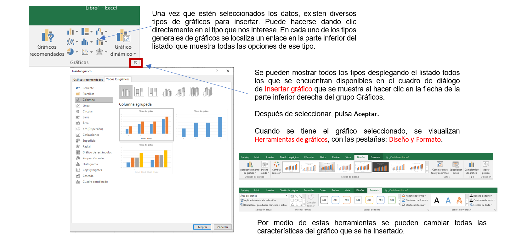
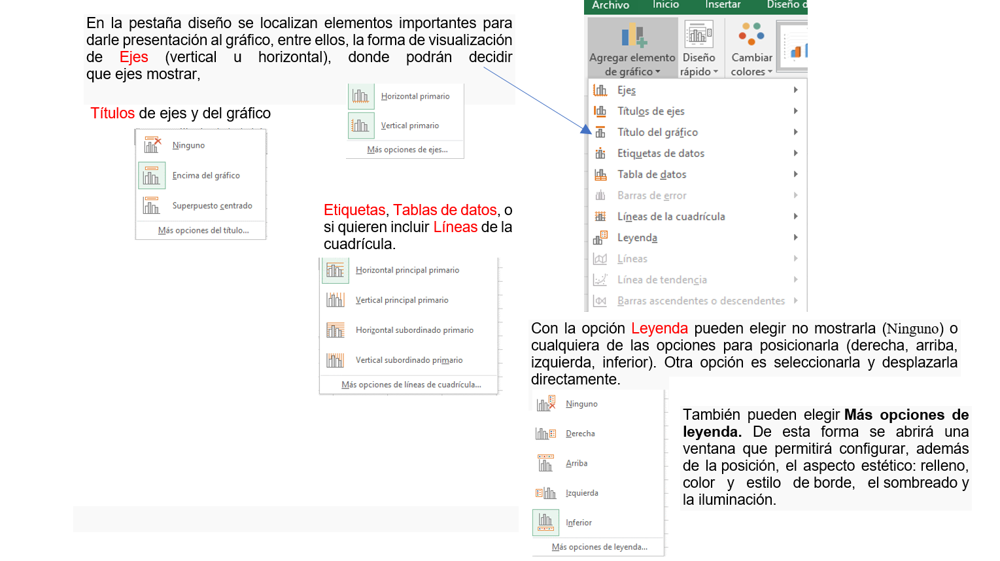
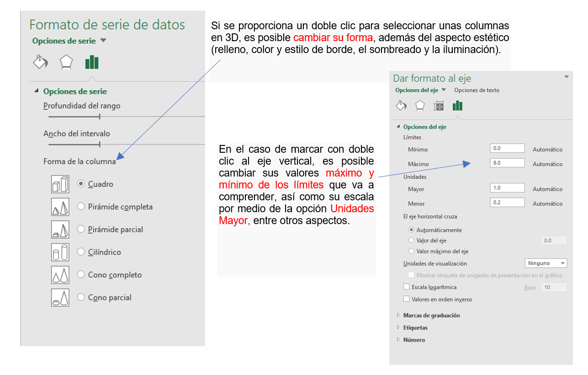

Se utilizan representaciones gráficas para facilitar la interpretación de los datos de una hoja de cálculo. Los gráficos pueden insertarse en una hoja normal como cualquier otro objeto o crearse en una hoja exclusiva para él.
Para diseñar un gráfico es importante que primero se seleccionen las celdas que contienen los datos que se quieren usar. En caso de que estén asignadas etiquetas en las filas y en las columnas, también deben incluirse en la selección.


En la pestaña de formato encontrarán la sección de Estilos para enriquecer la visualización de objetos y los Estilos de WordArt, que permiten aplicarse sobre los gráficos. Solamente se requiere seleccionar el área del gráfico o uno de los componentes (barras, leyenda, área de trazado, líneas de división principales, etc....) y luego dar clic en el estilo que más se ajuste a lo que se requiera.
Dependiendo del elemento seleccionado se podrá modificar unos aspectos u otros.
